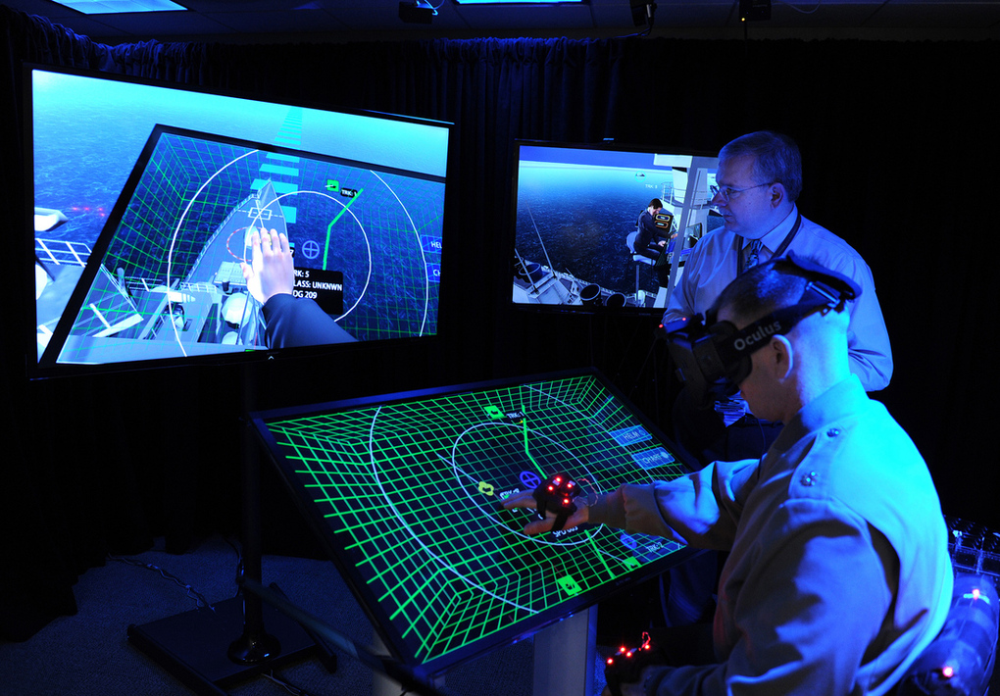

Основные направления развития современных Интернет-технологий
Развитие инфокоммуникационных технологий, а в частности интернет-технологий на сегодняшний день является актуальным и практикуется практически в каждой отрасли.
Узнать подробнее
К числу лидеров цифровизации относится финансовая индустрия:
-
Онлайн-банкинг
-
Электронные платежи
-
Краудфандинг
-
Инвестиционные роботы-советники
-
Облачное хранение информации
-
Криптовалюты, блокчейн
«Индустрия 4.0»
Такое понятие, как «Индустрия 4.0» впервые появилось в Германии. Немецкое правительство в 2011 году разработало план по развитию промышленности, который заключался в том, чтобы объединить в целостное информационное поле промышленное оборудование и информационные системы, что привело бы к их функционированию без участия человека.
Перечень технологий, на которых основывается «Индустрия 4.0»:
-
Интернет-вещей
Это сеть физических устройств, которые подключены к другим устройствам и службам через Интернет или другую сеть и обмениваются с ними данными.
-
VR/AR
VR – виртуальная реальность, построенная технически. Её визуальный ряд и контекст ограничены только масштабом фантазии разработчика.
AR – дополненная реальность, в которой мир перед человеком изменяется с помощью наслоения цифровых объектов.
-

Искусственный интеллект
Это имитация процессов человеческого интеллекта машинами, особенно компьютерными системами. Конкретные приложения ИИ включают экспертные системы, обработку информации на естественном языке, распознавание речи и машинное зрение.
-
BigData
Это структурированные или неструктурированные массивы данных большого объема. Их обрабатывают при помощи специальных автоматизированных инструментов, чтобы использовать для статистики, анализа, прогнозов и принятия решений.
Ключевые направления развития ИТ в концепции «Web 3.0»
В Web 3.0 трехмерная визуализация позволяет создавать более реалистичные и глубокие визуальные сцены, которые охватывают более широкий диапазон информации. Это может включать трехмерные модели объектов, ландшафтов, архитектуры и даже абстрактных концепций.
3D-визуализация и интерактивность в Web 3.0 имеют широкий спектр применения:
-
Образование
-
Дизайн и архитектура
-

Развлечения
-
Медицина и наука
Преимущества использования 3D-технологии
Использование информационных технологий в сфере туризма
Применение ИТ в концепции «Web 3.0» в сфере туристического бизнеса. В сфере туризма Web 3.0 может использоваться для создания интерактивных платформ, позволяющих пользователям исследовать различные направления, изучать достопримечательности и бронировать отели и авиабилеты.
Перечень технологий, использующихся в сфере туризма:
Виртуальная реальность:
Очки виртуальной реальности в расчете окупаемости для туризма дают отличный результат. Турист может реально оценить, что его ждет в конкретной стране, на конкретном объекте и в конкретное время года. Это одновременно уникальный аттракцион, реклама и способ донести информацию гораздо лучше, чем это делает любой путеводитель или видеоролик. Виртуальную реальность уже сегодня называют одной из восьми новых технологий, которые изменят будущее.
Искусственный интеллект:
Интересное применение ИИ в путешествиях — планирование поездок. Будь то семейный отдых, романтическое путешествие или деловая поездка, ИИ может спланировать все за вас. Основываясь на истории поездок, предпочтениях в различных категориях и поисковых данных, искусственный интеллект прогнозирует потребности клиентов и дает персональные рекомендации по путешествиям. Решения на основе искусственного интеллекта пригодятся не только для помощи путешественникам в планировании поездки, но и во время их пребывания.